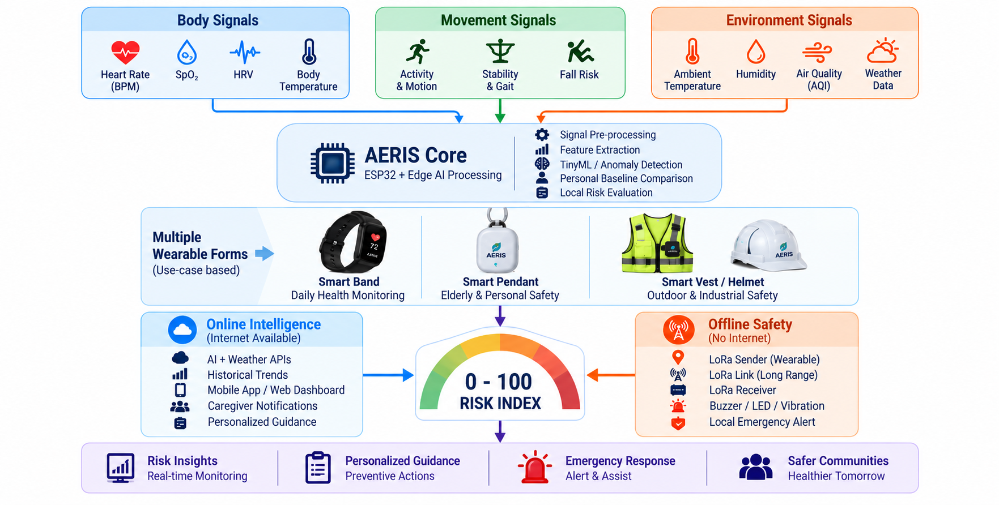
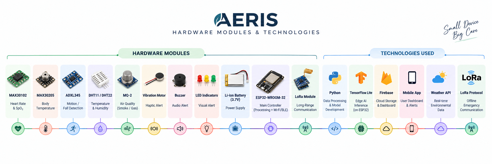
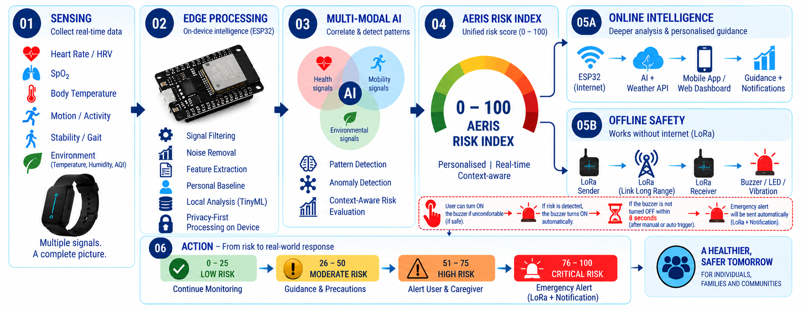
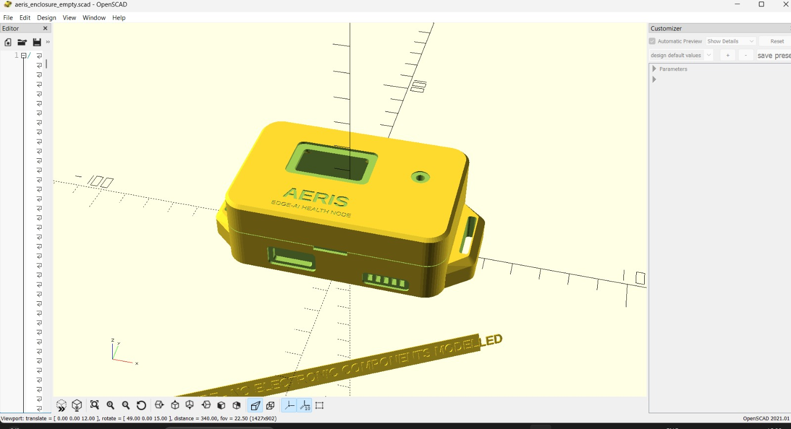
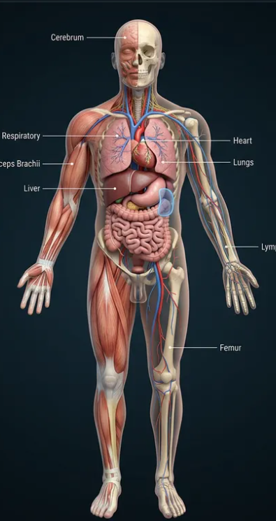
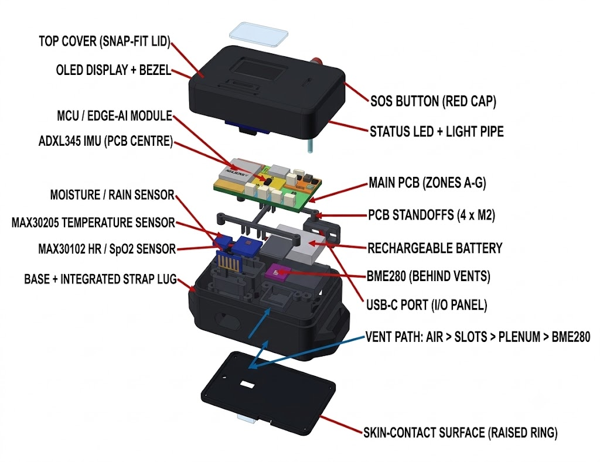
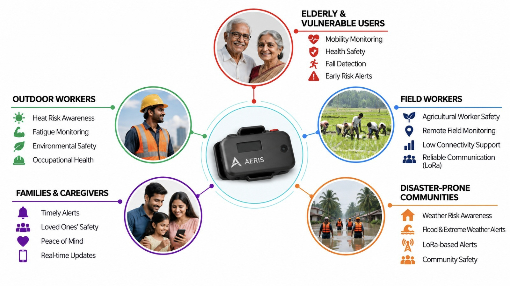

AERIS — AI-Enabled Resilient Health Intelligence System
A privacy-preserving, edge-intelligent personal health companion built for continuous physiological risk awareness, extreme heatwave thermoregulation, and off-grid multi-hazard disaster resilience.
🧠
Edge AI & TinyML
Processes sensitive PPG and motion signals locally on an ESP32 microcontroller with zero forced cloud uploads.
DPDP Act 2023Signal Quality Index
📡
Offline LoRa Mesh
Maintains emergency SOS broadcast capability over miles when mobile cell towers and Wi-Fi networks collapse.
433 / 868 MHzZero Internet Needed
🌡️
Clinical Risk Fusion
Fuses Moran’s Physiological Strain Index (PSI) and WBGT heatwave indices into an interpretable 0–100 Risk Score.
PSI 0–9Circadian Baseline
The Real-World Crisis in India
Why Existing Smartwatches Fail During Real Emergencies
During peak summer heatwaves (45°C+) or severe monsoon floods, vulnerable citizens (elderly individuals, outdoor gig workers) face acute health emergencies precisely when telecom networks collapse.

Problem vs. Our Edge-Intelligent Solution
❌ 1. Isolated Metrics (No Climate Context)
A 110 BPM heart rate in an air-conditioned room is normal; at 44°C ambient heat, it is fatal heat stroke. Traditional smartwatches cannot correlate human biology with environmental hazards.
📵 2. Total Network Fragility
Commercial wearables depend 100% on active cellular towers. During cyclones and floods, towers lose power and go dark, rendering cloud-dependent SOS features completely useless.
💸 3. Economic & Privacy Barriers
Priced from ₹5,000 to ₹45,000, commercial wearables are economically inaccessible to daily-wage workers, while uploading personal medical vitals to corporate servers violates privacy.
End-to-End System Architecture
Dual-Mode Communication Architecture & Offline Flow
Real-time sensor acquisition on ESP32, local noise reduction, and dual-pathway failover transmission.

System Architecture: Online Cloud Path vs. Offline LoRa Disaster Lifeline
🌐 Pathway A: Online Routine Monitoring
* Bluetooth Low Energy (BLE) / Wi-Fi telemetry to local AERIS Hub.
* Streams to Next.js 16 dashboard with sub-50ms latency via WebSockets.
* Automated alerts via Telegram Bot API and Fast2SMS Indian cellular gateway.
* Supabase cloud persistence with strict Row Level Security (RLS).
🚨 Pathway B: Offline Disaster Lifeline (LoRa)
* Automatically engages SX1278 Sub-GHz RF transceiver at 433 MHz.
* Zero cellular infrastructure, zero internet, zero SIM card needed.
* Direct point-to-gateway distress broadcast over 3 to 10 kilometers.
* Triggers community emergency sirens and NDRF relief coordination beacons.
Low-cost component selection running on an ESP32 Dual-Core microcontroller with dedicated DSP load-balancing.

Hardware Block Diagram & Sensor Buses
🔬 5 Multi-Modal Sensor Nodes
Sensor
Parameter
Clinical Purpose
MAX30102
PPG HR + SpO₂
Cardiovascular reserve & Hypoxia
MAX30205
Clinical Temp (0.1°C)
Subclinical thermal anomaly
MPU6050
6-Axis IMU
Gait symmetry & Fall detection
BME280
Temp, RH, Barometer
Ambient WBGT & Storm drop
Rain Node
Precipitation
Monsoon & Flood contact
⚡ ESP32 Dual-Core Load Balancing
Core 0 dedicated to 400kHz I2C optical DSP; Core 1 executes risk state machines, OLED refresh, and LoRa transmission.
Parametric CAD & Ergonomics
Proposed 3D CAD Enclosure Design (OpenSCAD)
High-precision parametric CAD model (`aeris_wearable_case.scad`) designed for rapid 3D printing and rugged field durability.

OpenSCAD 3D Render: Exploded & Assembled View
📐 Parametric Chassis Highlights
* Dual-Tone High-Contrast Aesthetic: Alpine White top bezel body with Midnight Black chamfered edge bumpers.
* Tactile SOS Collar: Right flank button with a raised collar preventing accidental triggers during sleep.
* Acoustic Resonator Grille: Left flank tuned sound cavities maximizing 85dB piezo buzzer penetration in rain.
* Precision Optical Window: Bottom chassis recess sealing the MAX30102 PPG sensor against skin motion slippage.
* Standard 20mm Lug Channels: Compatible with off-the-shelf silicone and velcro straps.
OpenSCAD $fn=60Snap-Lock TongueRapid 3D Print Ready
Embedded Signal Intelligence
TinyML: Perfusion Index & Signal Quality Index (SQI)
Eliminating optical motion noise and classifying vital anomalies on-chip in microcontroller C++ firmware.
📊 Optical Perfusion Index (PI) Calculation
PPG sensors suffer severe noise from hand gestures. AERIS extracts the ratio between dynamic pulsatile AC and static tissue DC:
Perfusion Index FormulaPI = (AC_Component / DC_Component) * 100
The ultimate emergency lifeline when telecommunication networks and power grids collapse during natural disasters.
🚨 Long-Range Point-to-Gateway Pathway
When standard Wi-Fi drops, AERIS engages its SX1278 transceiver over unlicensed Sub-GHz radio frequencies. A triple-click on the tactile SOS collar transmits an encrypted binary payload directly to local community rescue beacons.
📡
3 to 10 km RangeZero SIM Card RequiredZero Cloud Dependency
Tracks rolling 24-hour hourly averages ($\mu \pm 2\sigma$) to catch subclinical temperature spikes hours before full fever onset.
Subclinical AnomalyT_current > T_circadian + 2*σ
Early Prevention
Visualization & Autonomics
WebGL 3D Bio-Digital Twin & Resonance Guided Breathing
Interactive Three.js graphics rendering real-time organ strain paired with vagal nerve stimulation tools.

Anatomical Organ Heatmap Mapping
🫀 WebGL 3D Holographic Bio-Twin
* Dynamic Cardiac Pulsing: The internal 3D heart physically expands and contracts matching the exact live BPM from hardware.
* Regional Shader Heatmaps: Brain, chest, lungs, and legs dynamically shift between emerald cyan, amber warning, and alert red based on strain contributions.
* Decoupled WebGL Render Loop: Uses mutable matrix refs, eliminating expensive React virtual DOM re-renders for steady 60 FPS performance.
🧘 GSR-Free Stress & Resonance Breathing
* GSR-Free Stress Estimation: Combines HRV RMSSD ratio (65% weight) with heart rate reserve (35% weight) without fragile skin electrodes.
* Resonance Breathing Pacer: 4-4-6 pacing cycle (Inhale 4s, Hold 4s, Exhale 6s) scientifically proven to stimulate vagal nerve tone and reduce tachycardia.
Four integrated layers of intelligence ensuring robust operation from microsecond signal processing to civil defense triage.

Layer-by-Layer Intelligence Architecture
Four Layers of Intelligence
• Layer 1 (Sensor Hardware): Sub-millisecond signal acquisition and hardware optical noise filtering on ESP32.
• Layer 2 (On-Device TinyML): Perfusion Index calculation, SQI gating, and offline anomaly detection in C++.
• Layer 3 (Clinical Risk Engine): Moran's PSI, WBGT heat index, and 0–100 Composite Risk Index.
• Layer 4 (Civil Defense Hub): Local triage rule engine paired with Google Gemini 3.6 Flash and dedicated /government incident dashboard.
Deployment ReadyMulti-Tier Scalability
National Impact & Strategic Policy
Aligning with National Priorities & Citizen Healthcare Missions
Addressing vulnerable demographics across India with an affordable ₹1,200 Bill of Materials.

Demographic Impact & National Program Alignment
🏛️ Strategic National Alignment
• Ayushman Bharat Digital Mission (ABDM): Unified Health Interface (UHI) adherence for longitudinal health record sharing.
• NPCCHH (Climate & Health): Real-time epidemiological heatwave and environmental pollution surveillance.
• DPDP Act 2023: Strict on-device data minimization; raw biometric vitals never leave the device.
• NDMA Guidelines: Common Alerting Protocol (CAP) compliance for disaster emergency relief dispatch.
ABDM CompatibleDPDP 2023 CompliantNDMA CAP
★ BONUS CONTENT — MARKET DIFFERENTIATION
Competitive Moat: AERIS vs. Commercial Market Wearables
Why AERIS outperforms commercial smartwatches in extreme disaster resilience, affordability, and climate-correlated health tracking.
Feature / Metric
AERIS Wearable
Apple Watch Ultra
Ultrahuman Ring
Garmin Forerunner
Unit BOM / Retail Cost
~ ₹1,200 ($15)
₹89,900 ($1,000+)
₹28,499 ($340)
₹42,990 ($510)
Offline Disaster Telemetry
YES (LoRa 433 MHz)
NO (Cellular Only)
NO (Bluetooth Only)
NO (Cellular Only)
Climate Heat Correlation
YES (Moran's PSI + WBGT)
NO
NO
Partial (Acclimation)
Rain / Flood Contact Sensor
YES (Conductivity Node)
NO
NO
NO
Operation During 4G Blackout
100% Fully Functional
Useless for SOS
Useless for SOS
Useless for SOS
Data Privacy & DPDP Compliance
Local Edge Processing
Proprietary Cloud
Cloud Dependent
Cloud Dependent
Triage Dashboards
Citizen + Govt (NDMA)
Consumer App Only
Consumer App Only
Consumer App Only
True Life-Safety Infrastructure1/10th Cost of Entry-Level Smartwatches
★ BONUS CONTENT — SYSTEMS ENGINEERING
Fault Tolerance & Fail-Safe Engineering Under Extreme Stress
Engineered to maintain uninterrupted reliability during component detachment, low battery, and radio channel congestion.
🛑
1. Optical Decoupling
* Failure Mode: Sensor detaches from wrist during sleep or running.
* Fail-Safe: Continuous IR reflection threshold gating (FINGER_THRESHOLD = 1800).
* Instantly transitions to NO_FINGER idle state, suppressing false bradycardia/hypoxia panics.
🔋
2. Power Management
* Crisis Constraints: Prolonged multi-day power grid blackouts.
* Fail-Safe: Dual-core adaptive duty-cycling. Sensor polling scales down to 0.5Hz during calm periods and bursts to 50Hz during anomalies.
* 15µA deep-sleep standby enabling up to 7 days of crisis battery life.
📡
3. LoRa Radio Congestion
* Radio Collision: Hundreds of wearables broadcasting in the same disaster zone.
* Fail-Safe: Randomized exponential backoff with Listen-Before-Talk (LBT).
* 16-bit CRC packet verification and gateway ACK confirmation.
★ BONUS CONTENT — INTERACTIVE DEMO
Interactive Live Simulation Playground
Test real-time physiological response states right now inside the presentation:
AERIS LIVE TELEMETRY STREAM
HEART RATE:72 BPM
SPO2 OXYGEN:98 %
SKIN TEMP:36.5 °C
PSI HEAT STRAIN:1.2 / 9.0
AERIS RISK INDEX:12 / 100 [SAFE]
PATHWAY ACTIVE:BLE / Wi-Fi (Online)
★ BONUS CONTENT — PRESENTATION DEFENSE
Top 4 Toughest Judge Questions & Bulletproof Rebuttals
Pre-formulated technical defenses for tomorrow's question and answer session.
Q1: How can LoRa radio signals penetrate thick urban buildings?
Rebuttal: Sub-GHz frequencies (433/868 MHz) have significantly longer wavelengths (~69 cm) compared to 2.4GHz Wi-Fi (12 cm) or 5G mmWave. Basic electromagnetic physics allows these longer waves to diffract around buildings and penetrate concrete and foliage with minimal attenuation over 2 to 4 kilometers in dense urban environments.
Q2: Why choose ESP32 over an ultra-low-power Nordic nRF52?
Rebuttal: Cost, availability, and dual-core parallelism. The ESP32 costs ~₹320 ($3.80) while providing two physical Xtensa cores: Core 0 handles intensive 400kHz I2C optical DSP, while Core 1 executes LoRa RF protocols without interrupt jitter. With adaptive deep sleep, we achieve multi-day battery autonomy at one-third the cost of nRF chips.
Q3: How do you measure stress accurately without GSR electrodes?
Rebuttal: Galvanic skin response (GSR) electrodes are notoriously fragile, sweat-sensitive, and prone to rapid electrode oxidation. Instead, we use HRV RMSSD (Root Mean Square of Successive Differences). Clinically established literature (Shaffer et al. 2017) proves RMSSD directly tracks parasympathetic vagal tone and pairs with heart rate reserve with high fidelity.
Q4: How do you prevent accidental emergency SOS panic triggers?
Rebuttal: We implement physical collar protection plus a multi-stage firmware validation filter: (1) 50ms hardware debounce, (2) triple-press detection window (3 presses within 1.5 seconds), and (3) a 3-second acoustic buzzer chirp countdown, allowing the user to cancel any accidental trigger before the LoRa packet transmits.
Summary & Future Vision
AERIS: Saving Lives Before Emergencies Turn Fatal
Transforming personal health tracking from an expensive luxury gadget into an affordable, climate-resilient, offline-ready life preservation system for every Indian citizen.
Phase 1: Validated Prototype
Working 5-sensor hardware stack, live WebSocket serial bridge, and full-stack Next.js 16 web hub operational.
100% Operational
Phase 2: Pilot Field Trials
Disaster simulation trials with NDRF / SDMA and LoRa mesh gateway deployment across coastal Tamil Nadu flood zones.
NDRF Field Trials
Phase 3: National Scale
Ayushman Bharat Digital Mission (ABDM) integration and subsidized distribution for 100,000+ outdoor gig workers.
Mass Scale (~₹1,000)
Thank You! We are ready for your Questions. 🎙️
🎙️ Speaker Script (Slide 1)✕
Welcome judges and peers. I am proud to present AERIS—the AI-Enabled Resilient Health Intelligence System developed by Team STRAW HATS. Today, I'll walk you through how we combined edge intelligence, low-cost embedded hardware, and offline disaster radio to protect lives during extreme climate hazards.